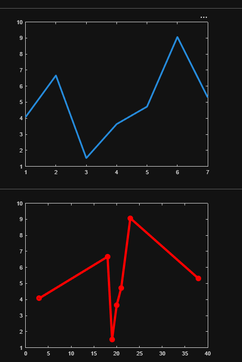
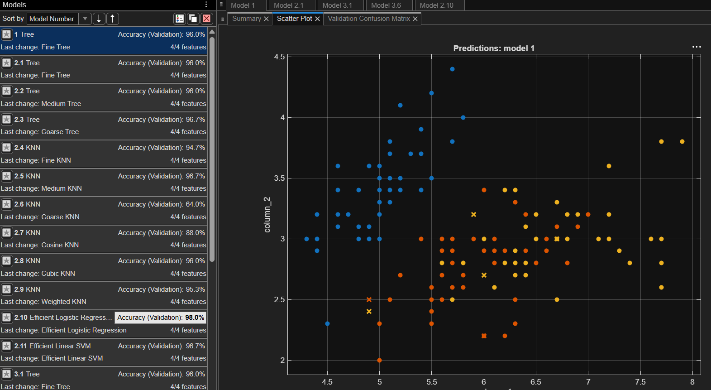
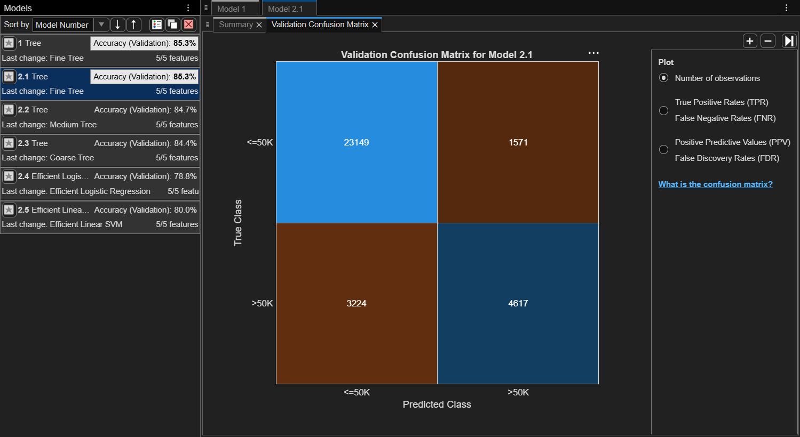

文章主題：從數據深處挖掘價值：資料探勘的實務與心法
1. 核心觀點：資料探勘不只是統計，更是「洞察」
資料探勘的核心在於從龐大且結構雜亂的數據集中，找出隱藏的模式、關聯與趨勢。對於資管人員而言，我們不僅要懂演算法，更要懂這些技術如何協助企業解決真實問題。
2. 資料探勘的四大支柱（建議結合圖表呈現）
在文章中，您可以簡述這四項技術如何應用：
- 分類 (Classification)： 透過訓練模型預測目標類別（例如：客戶流失預測）。
- 分群 (Clustering)： 在沒有預設標籤的情況下，將相似對象歸類（例如：精準行銷的用戶畫像/Persona）。
- 關聯規則 (Association Rules)： 挖掘項目之間的共生關係（例如：經典的「啤酒與尿布」購物籃分析）。
- 迴歸分析 (Regression)： 預測連續性的數值變化（例如：下一季度的銷售額預測）。
3. 從技術到落地：資管人的價值鏈
專業素養的展現，在於您如何將上述技術「落地」。建議您可以討論以下流程：
- 資料前處理（Data Cleaning）： 這是最耗時但也最重要的一環。分享您如何處理缺失值、雜訊與異常值，這能顯現您的細心與實務經驗。
- 特徵工程（Feature Engineering）： 這是資料探勘的靈魂。解釋您如何選取最能代表業務意義的特徵，而非盲目投入所有數據。
- 模型迭代與評估： 透過混淆矩陣 (Confusion Matrix) 或 ROC 曲線等工具，評估模型的準確度。
- 業務轉譯： 將複雜的技術指標轉化為業務主管聽得懂的「投資報酬率 (ROI)」或「風險降低幅度」。
4. 結語：在自動化時代，人扮演的角色
隨著 AutoML 的普及，演算法本身門檻降低了，但「定義問題」與「解讀結果」的能力將成為資管人員的護城河。強調您如何透過資料探勘，協助企業從「經驗法則」轉型為「數據驅動」的決策模式。


